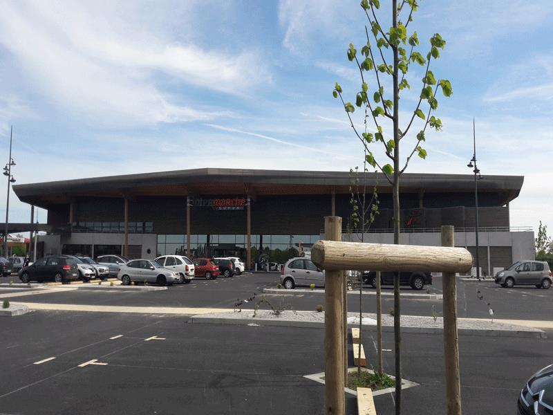
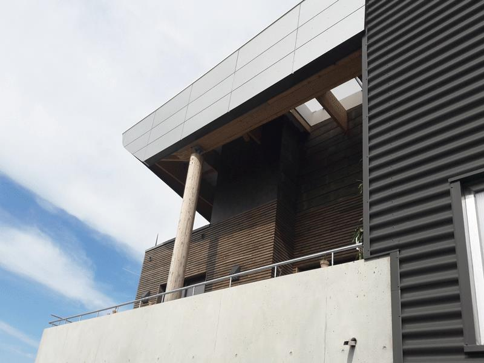

1. Construction d'un bâtiment logistique - Longny-au-Perche (61)
BATIMENT LOGISTIQUE – 61290 LONGNY AU PERCHE
Maître d’ouvrage : Privé
Année : 2012
Coût global de l’opération : bâtiment 6 700 000€ HT
Construction d’un bâtiment d’environ 10 000 m2 de surface au sol. Ces surfaces et jonctions sont réparties suivant différentes zones : - La zone de stockage pour 6 000 m2 - La zone de réception expédition de 1670 m2 - Une zone de bureau et locaux dit sociaux, sanitaires vestiaires de 120 m2 - Une série de locaux techniques (rechargement de chariot sur 610m2, stockage des produits spécifiques dits dangereux de 840 m2, stockage des cartons sur 450 m2...)

2. Ateliers Communautaires de la CDC à Sablé-sur-Sarthe (61)
3. CAS Mortagne au Perche (61)
4. Construction d'un Intermarché - St Julien sur Sarthe (61)
INTERMARCHE – SAINT JULIEN SUR SARTHE - 61170
Maître d’ouvrage : Privé
Année : 2017
Coût global de l’opération : bâtiment 5 000 000€ HT
Le projet de surface commerciale à Saint Julien sur Sarthe est parti d’une volonté forte d’accueil et de confort des utilisateurs, tant pour le personnel que pour la clientèle. Des jeux de lignes de façades, de matières et de lumière naturelle offrent un cadre particulièrement soigné à cet ERP de 1ère catégorie. Dans un contexte rural et agricole, le bâtiment bénéficie d’un aménagement paysagé important. Parfaitement isolé, équipé d’une chaudière bois, d’un système de récupération sur les rayons surgelés, des dernières techniques de gestion centralisée et de 1 300 m² de panneaux photovoltaïques, la maîtrise des consommations énergétiques est au centre des attentions techniques.


5. Construction d'un atelier cidricole - St Pierre sur Dives (14)
6. Maison des services - Mortagne-au-Perche (61)
MAISON des SERVICES – 61400 MORTAGNE AU PERCHE
Maître d’ouvrage : Privé
Année : 2011
Coût global de l’opération: bâtiment 520 000€ HT
Valorisation des façades en entrée de ville en répondant aux exigences thermiques et accessibilité PMR (ascenseur, …) Aménagement des locaux pour accueillir les bureaux des organismes de service à la personne (portage des repas, HAD Hôpital à domicile) dans un immeuble administratif de l’état des années 70.

7. Construction d'une gendarmerie avec logements - Mortagne-au-Perche (61)
Gendarmerie – 61400 MORTAGNE AU PERCHE
Maître d’ouvrage : Public
Année : 2011
Coût global de l’opération : bâtiment 520 000€ HT
38 logements individuels + 10 studios gendarmes adjoints + 7 logements individuels de réserve et 800 m² de locaux de service Performance énergétique : RT 2005
L’implantation même des locaux de service à l’angle nord ouest du terrain, sur la zone la plus plane, en permet une perception forte depuis le rond point urbain du bas de la rue des Déportés. Bâtiment charnière, bâtiment structurant pour le quartier et pour la ville, il impose une architecture de qualité, en transition entre la ville et la nature et apporter une image contemporaine et respectueuse.
8. Construction d'un bâtiment industriel BOHIN INDUSTRIE - L'Aigle(61)
9. Bâtiment industriel CRIMO France - Alençon (61)